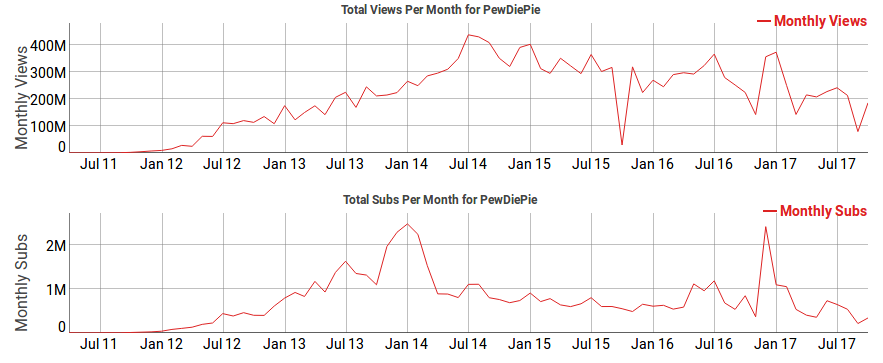
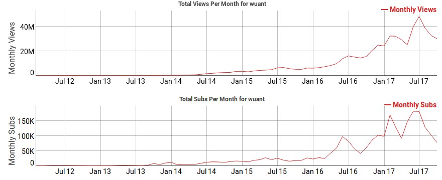

No YouTube, os comentários têm um papel essencial na evolução de cada canal.
Assim, os criadores de vídeo procuram satisfazer as suas audiências consoante os
comentários que os mesmos deixam nos seus vídeos de modo a agradar ao maior número de pessoas mantendo-se sempre fiéis ao seu gosto e estilo pessoal e à projeção
inicial que tinham aquando da criação dos seus canais.
Gostos
A importância do “gosto” vai um pouco além do simples facto de querer mostrar a
satisfação da audiência do canal perante o conteúdo produzido pelo criador. Por mais
que um vídeo se possa tornar popular só pelo número de visualizações, é através da
quantidade de “gostos” que o YouTube vai saber qual a relação que
os utilizadores tiveram com aquele conteúdo e a relevância dele.
Visualizações
As visualizações de vídeo do YouTube demonstram o número de vezes que um vídeo
foi visto e podem revelar uma métrica importante para perceber a popularidade
geral de um vídeo.
Imediatamente após a publicação de um vídeo, apenas são mostradas as visualizações que o YouTube considera válidas. Depois de serem contabilizadas todas as visualizações de qualidade, a contagem é atualizada mais frequentemente.
EXEMPLO DA EVOLUÇÃO DE ALGUNS YOUTUBERS
Com o entuito de avaliar a evolução dos canais do Youtube nos dias de hoje, em
termos de número de visualizações e de subscritores, ao longo do trabalho temos
vindo a avaliar o crescimento dos mesmos. Deste modo escolhemos 2 canais para
se poder comparar estas estatísticas entre eles e também compreendermos a rapidez
com que todos estes valores evoluem.
PewdiePie
Primeiramente, temos Felix Arvid Ulf Kjellber, mais conhecido sob o apelido online
PewDiePie , é um comediante de internet e produtor de vídeos sueco, mais conhecido pelos seus comentários de Let's Play nos vlogs no YouTube. É o YouTuber com
mais subscritores, contando já com mais de 57 milhões.

Como podemos observar, Felix é um autêntico fenómeno da Internet. Fazendo uma
pequena análise dos gráficos acima representados, é possível verificar que este teve
uma explosão de subscritores no fim do ano de 2013 e início de 2014 arrecadando
mais de 2.5 milhões no mês de Janeiro. Estima-se que o seu capital próprio em 2016
era de 61 milhões de dólares.
Wuant
Em termos nacionais, não podíamos deixar de mencionar Paulo Borges ou como é
conhecido na internet: Wuant. Paulo, natural de Aveiro, é um YouTuber português
conhecido pelos seus vídeos de carácter maioritariamente cómico e também vlogs.
No início dedicava-se aos videojogos mas fartou-se e decidiu mudar de estilo.
O
canal de Paulo conta já com mais de 2.4 milhões de subscritores.

O exemplo do Wuant é um pouco diferente visto que apesar de ambos já publicarem
vídeos há bastante tempo, a explosão do português foi relativamente recente (em
meados de 2016) como se pode verificar nos gráficos acima representados. Segundo
o website Social Blade, o Youtuber aveirense ganha entre 6 e 96 mil euros por mês.